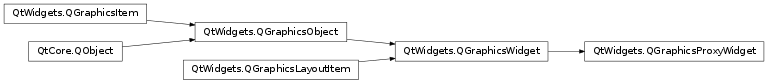

QGraphicsProxyWidget¶
Synopsis¶
Functions¶
- def
createProxyForChildWidget(child) - def
setWidget(widget) - def
subWidgetRect(widget) - def
widget()
Slots¶
- def
newProxyWidget(arg__1)
Detailed Description¶
The
PySide2.QtWidgets.QGraphicsProxyWidgetclass provides a proxy layer for embedding aPySide2.QtWidgets.QWidgetin aPySide2.QtWidgets.QGraphicsScene.
PySide2.QtWidgets.QGraphicsProxyWidgetembedsPySide2.QtWidgets.QWidget-based widgets, for example, aPySide2.QtWidgets.QPushButton,PySide2.QtWidgets.QFontComboBox, or evenPySide2.QtWidgets.QFileDialog, intoPySide2.QtWidgets.QGraphicsScene. It forwards events between the two objects and translates betweenPySide2.QtWidgets.QWidget‘s integer-based geometry and QGraphicsWidget ‘s qreal-based geometry.PySide2.QtWidgets.QGraphicsProxyWidgetsupports all core features ofPySide2.QtWidgets.QWidget, including tab focus, keyboard input, Drag & Drop, and popups. You can also embed complex widgets, e.g., widgets with subwidgets.Example:
import sys QApplication app(sys.argv) tabWidget = QTabWidget() scene = QGraphicsScene() proxy = scene.addWidget(tabWidget) view = QGraphicsView(scene) view.show() return app.exec_()
PySide2.QtWidgets.QGraphicsProxyWidgettakes care of automatically embedding popup children of embedded widgets through creating a child proxy for each popup. This means that when an embeddedPySide2.QtWidgets.QComboBoxshows its popup list, a newPySide2.QtWidgets.QGraphicsProxyWidgetis created automatically, embedding the popup, and positioning it correctly. This only works if the popup is child of the embedded widget (for exampleQToolButton.setMenu()requires thePySide2.QtWidgets.QMenuinstance to be child of thePySide2.QtWidgets.QToolButton).
Embedding a Widget with QGraphicsProxyWidget¶
There are two ways to embed a widget using
PySide2.QtWidgets.QGraphicsProxyWidget. The most common way is to pass a widget pointer toQGraphicsScene.addWidget()together with any relevantQt.WindowFlags. This function returns a pointer to aPySide2.QtWidgets.QGraphicsProxyWidget. You can then choose to reparent or position either the proxy, or the embedded widget itself.For example, in the code snippet below, we embed a group box into the proxy:
groupBox = QGroupBox("Contact Details") numberLabel = QLabel("Telephone number") numberEdit = QLineEdit() layout = QFormLayout() layout.addRow(numberLabel, numberEdit) groupBox.setLayout(layout) scene = QGraphicsScene() proxy = scene.addWidget(groupBox) view = QGraphicsView(scene) view.show()The image below is the output obtained with its contents margin and contents rect labeled.

Alternatively, you can start by creating a new
PySide2.QtWidgets.QGraphicsProxyWidgetitem, and then callPySide2.QtWidgets.QGraphicsProxyWidget.setWidget()to embed aPySide2.QtWidgets.QWidgetlater. ThePySide2.QtWidgets.QGraphicsProxyWidget.widget()function returns a pointer to the embedded widget.PySide2.QtWidgets.QGraphicsProxyWidgetshares ownership withPySide2.QtWidgets.QWidget, so if either of the two widgets are destroyed, the other widget will be automatically destroyed as well.
Synchronizing Widget States¶
PySide2.QtWidgets.QGraphicsProxyWidgetkeeps its state in sync with the embedded widget. For example, if the proxy is hidden or disabled, the embedded widget will be hidden or disabled as well, and vice versa. When the widget is embedded by calling addWidget(),PySide2.QtWidgets.QGraphicsProxyWidgetcopies the state from the widget into the proxy, and after that, the two will stay synchronized where possible. By default, when you embed a widget into a proxy, both the widget and the proxy will be visible because a QGraphicsWidget is visible when created (you do not have to callshow()). If you explicitly hide the embedded widget, the proxy will also become invisible.Example:
scene = QGraphicsScene() edit = QLineEdit() proxy = scene.addWidget(edit) edit.isVisible() // returns true proxy.isVisible() // also returns true edit.hide() edit.isVisible() // returns false proxy.isVisible() // also returns false
PySide2.QtWidgets.QGraphicsProxyWidgetmaintains symmetry for the following states:
PySide2.QtWidgets.QWidgetstatePySide2.QtWidgets.QGraphicsProxyWidgetstateNotes QWidget.enabledQGraphicsProxyWidget.enabledQWidget.visibleQGraphicsProxyWidget.visibleThe explicit state is also symmetric. QWidget.geometryQGraphicsProxyWidget.geometryGeometry is only guaranteed to be symmetric while the embedded widget is visible. QWidget.layoutDirectionQGraphicsProxyWidget.layoutDirectionQWidget.styleQGraphicsProxyWidget.styleQWidget.paletteQGraphicsProxyWidget.paletteQWidget.fontQGraphicsProxyWidget.fontQWidget.cursorQGraphicsProxyWidget.cursorThe embedded widget overrides the proxy widget cursor. The proxy cursor changes depending on which embedded subwidget is currently under the mouse. QWidget.sizeHint()QGraphicsProxyWidget.sizeHint()All size hint functionality from the embedded widget is forwarded by the proxy. QWidget.getContentsMargins()QGraphicsProxyWidget.getContentsMargins()Updated once by PySide2.QtWidgets.QGraphicsProxyWidget.setWidget().QWidget.windowTitleQGraphicsProxyWidget.windowTitleUpdated once by PySide2.QtWidgets.QGraphicsProxyWidget.setWidget().Note
PySide2.QtWidgets.QGraphicsScenekeeps the embedded widget in a special state that prevents it from disturbing other widgets (both embedded and not embedded) while the widget is embedded. In this state, the widget may differ slightly in behavior from when it is not embedded.Warning
This class is provided for convenience when bridging QWidgets and QGraphicsItems, it should not be used for high-performance scenarios.
-
class
PySide2.QtWidgets.QGraphicsProxyWidget([parent=nullptr[, wFlags=Qt.WindowFlags()]])¶ Parameters: - wFlags –
PySide2.QtCore.Qt.WindowFlags - parent –
PySide2.QtWidgets.QGraphicsItem
Constructs a new QGraphicsProxy widget.
parentandwFlagsare passed toPySide2.QtWidgets.QGraphicsItem‘s constructor.- wFlags –
-
PySide2.QtWidgets.QGraphicsProxyWidget.createProxyForChildWidget(child)¶ Parameters: child – PySide2.QtWidgets.QWidgetReturn type: PySide2.QtWidgets.QGraphicsProxyWidgetCreates a proxy widget for the given
childof the widget contained in this proxy.This function makes it possible to acquire proxies for non top-level widgets. For instance, you can embed a dialog, and then transform only one of its widgets.
If the widget is already embedded, return the existing proxy widget.
-
PySide2.QtWidgets.QGraphicsProxyWidget.newProxyWidget(arg__1)¶ Parameters: arg__1 – PySide2.QtWidgets.QWidgetReturn type: PySide2.QtWidgets.QGraphicsProxyWidgetCreates a proxy widget for the given
childof the widget contained in this proxy.You should not call this function directly; use
QGraphicsProxyWidget.createProxyForChildWidget()instead.This function is a fake virtual slot that you can reimplement in your subclass in order to control how new proxy widgets are created. The default implementation returns a proxy created with the
PySide2.QtWidgets.QGraphicsProxyWidget.QGraphicsProxyWidget()constructor with this proxy widget as the parent.
-
PySide2.QtWidgets.QGraphicsProxyWidget.setWidget(widget)¶ Parameters: widget – PySide2.QtWidgets.QWidgetEmbeds
widgetinto this proxy widget. The embedded widget must reside exclusively either inside or outside of Graphics View. You cannot embed a widget as long as it is is visible elsewhere in the UI, at the same time.widgetmust be a top-level widget whose parent is 0.When the widget is embedded, its state (e.g., visible, enabled, geometry, size hints) is copied into the proxy widget. If the embedded widget is explicitly hidden or disabled, the proxy widget will become explicitly hidden or disabled after embedding is complete. The class documentation has a full overview over the shared state.
PySide2.QtWidgets.QGraphicsProxyWidget‘s window flags determine whether the widget, after embedding, will be given window decorations or not.After this function returns,
PySide2.QtWidgets.QGraphicsProxyWidgetwill keep its state synchronized with that ofwidgetwhenever possible.If a widget is already embedded by this proxy when this function is called, that widget will first be automatically unembedded. Passing 0 for the
widgetargument will only unembed the widget, and the ownership of the currently embedded widget will be passed on to the caller. Every child widget that are embedded will also be embedded and their proxy widget destroyed.Note that widgets with the
Qt.WA_PaintOnScreenwidget attribute set and widgets that wrap an external application or controller cannot be embedded. Examples arePySide2.QtOpenGL.QGLWidgetand QAxWidget.
-
PySide2.QtWidgets.QGraphicsProxyWidget.subWidgetRect(widget)¶ Parameters: widget – PySide2.QtWidgets.QWidgetReturn type: PySide2.QtCore.QRectFReturns the rectangle for
widget, which must be a descendant ofPySide2.QtWidgets.QGraphicsProxyWidget.widget(), orPySide2.QtWidgets.QGraphicsProxyWidget.widget()itself, in this proxy item’s local coordinates.If no widget is embedded,
widgetis 0, orwidgetis not a descendant of the embedded widget, this function returns an emptyPySide2.QtCore.QRectF.
-
PySide2.QtWidgets.QGraphicsProxyWidget.widget()¶ Return type: PySide2.QtWidgets.QWidgetReturns a pointer to the embedded widget.
© 2018 The Qt Company Ltd. Documentation contributions included herein are the copyrights of their respective owners. The documentation provided herein is licensed under the terms of the GNU Free Documentation License version 1.3 as published by the Free Software Foundation. Qt and respective logos are trademarks of The Qt Company Ltd. in Finland and/or other countries worldwide. All other trademarks are property of their respective owners.